Saiu na mídia
Conheça seus direitos



Dr Márcio Luiz Couto
Você tem direito. E tem prazo para agir.
Você trabalhou, cumpriu sua parte, mas a empresa começou a atrasar seu salário, ignorar direitos e agir como se a lei não existisse? Isso é mais comum do que parece — e ninguém merece passar por isso sozinho. A MLCS Advocacia entende sua luta. Com experiência em Direito do Trabalho, o escritório está pronto para lutar por você de forma segura, estratégica e sem complicações. Seu direito não pode esperar.
Trabalhar duro e sair no prejuízo é uma grande injustiça. Mas muita gente aceita em silêncio por não saber que a lei está do seu lado.
Aviso prévio, férias vencidas/proporcionais, 13º salário e a multa de 40% do FGTS. Se você não recebeu todos esses valores, a empresa está te devendo.
Trabalhou além da sua jornada padrão, aos finais de semana ou em feriados e não recebeu? Isso é uma dívida que a empresa acumulou e pode ser cobrada na Justiça.
Sem registro na carteira de trabalho, você perde direitos como FGTS, INSS, férias e décimo terceiro. Contudo, é plenamente possível obter esse vínculo de forma judicial.
O depósito mensal do FGTS é uma obrigação estrita do empregador. Se o recolhimento não foi efetuado ou está em atraso, você pode cobrar estes valores corrigidos.
Cobranças excessivas abusivas, humilhações públicas, perseguições ou ameaças constantes no trabalho violam sua dignidade e dão direito a indenização por dano moral.
Se você sofreu um acidente laboral ou desenvolveu alguma patologia física/mental decorrente das suas atividades, tem direito a indenização e possíveis estabilidades.
Algumas empresas aplicam a justa causa de forma errônea apenas para se eximir do pagamento das verbas de rescisão. Se for o seu caso, a punição pode ser anulada em juízo.
Se a empresa descumpre obrigações cruciais (atrasa salários, não recolhe FGTS, expõe o trabalhador a perigo), você pode "demitir" a empresa com todos os seus direitos garantidos.
Trabalhar exposto a agentes nocivos à saúde (calor, barulho, químicos) ou em situações de risco de morte exige o pagamento de adicionais. Se não recebeu, há valores retroativos a cobrar.
Ajudamos você a recuperar o que é seu em quatro etapas descomplicadas.
Sem custo e sem compromisso. Basta clicar nos botões e descrever de forma breve o seu caso. O retorno da nossa equipe trabalhista é ágil.
Analisamos os fatos do seu caso, identificamos os direitos violados e explicamos se existe uma causa viável. Tudo sem linguagem jurídica complicada.
Desenvolvemos uma estratégia específica para o seu cenário particular, alinhando possibilidades de êxito, prazos estimados e os passos a seguir.
Com o processo em andamento, nossa equipe gerencia todas as etapas e mantém você atualizado. Você não precisa se preocupar com a burocracia judicial.
"Parabéns a todos que fazem parte desse renomado escritório. Excelentes profissionais. Recomendo!"
"Maravilhosa. Atendimento espetacular."
"Parabéns a todo time, em especial a Dra. Bruna. Muita facilidade para resolver os problemas jurídicos. Que Deus abençoe a todos."
"Super competentes, um atendimento humanizado que faz toda a diferença. Super recomendo!"
"Excelente escritório. Competência técnica excepcional na condução dos processos trabalhistas e atendimento muito diferenciado."
Márcio Luiz Couto dos Santos é advogado com mais de 15 anos de experiência na área trabalhista, atuando exclusivamente na defesa dos direitos dos trabalhadores em mais de mil processos. Possui atuação em casos de rescisão indireta, verbas rescisórias, horas extras, FGTS não depositado, adicional de insalubridade e periculosidade, reconhecimento de vínculo de emprego, acidente de trabalho, assédio moral e demais direitos trabalhistas. Atendimento presencial e online, com atuação no estado do Rio de Janeiro.
Você tem até 2 anos após a data da sua demissão (término do contrato de trabalho) para entrar com uma reclamação na Justiça do Trabalho. Contudo, você só poderá cobrar os direitos referentes aos últimos 5 anos retroativos contados a partir da data de início do processo. Recomendamos agir rápido para não perder direitos.
Não. Você pode acionar a Justiça do Trabalho mesmo estando empregado para cobrar obrigações não cumpridas, como horas extras pendentes, adicionais e FGTS atrasado. Caso a empresa cometa faltas graves frequentes, é possível pleitear a rescisão indireta, que permite que você saia do emprego recebendo todas as verbas rescisórias da demissão sem justa causa.
Sim! A falta de assinatura na sua carteira de trabalho (CTPS) é um descumprimento legal da própria empresa e não anula seus direitos. Pelo contrário: na Justiça do Trabalho é possível pedir o reconhecimento do vínculo empregatício e, comprovada a relação de trabalho, a empresa será obrigada a pagar retroativamente o FGTS, férias, 13º salário e assinar sua carteira.
A assinatura de um termo de rescisão não impede que você cobre direitos que não foram devidamente pagos ou que foram calculados de maneira incorreta. A quitação passada nesses papéis é apenas parcial, relativa aos valores que estão descritos no documento. Direitos omitidos, horas extras não contabilizadas ou pressões abusivas ainda podem ser discutidos judicialmente.
Sim, o atendimento é 100% online e seguro. Todo o envio de documentos, esclarecimento de dúvidas e reuniões podem ser realizados confortavelmente por WhatsApp, e-mail e videoconferências de onde você estiver. O processo judicial hoje em dia é totalmente digitalizado no Brasil, o que acelera o trâmite e dispensa deslocamentos desnecessários.
Sim. Juridicamente nada impede o trabalhador ativo de pleitear seus direitos in juízo. Embora existam receios naturais de retaliação ou demissão, a lei protege o trabalhador contra perseguições. É aconselhável avaliar a situação estrategicamente com um advogado trabalhista antes de iniciar a ação enquanto estiver no cargo.
⚠️ Atenção: você tem até 2 anos após a demissão para agir. Não perca seu prazo.
FALAR COM ADVOGADO AGORA